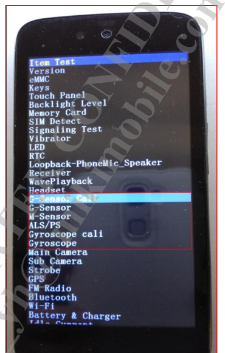

概述
SensorHub工厂模式下校准流程分析。
原理
重力传感器acc：
平放取20次平均，（{0,0,9.8}-平均值）=校准值 (float型)
写入Driver：校准值×1000 //JNI再IOCTL Driver中的GSENSOR_IOCTL_SET_CALI，只写nvram而不写入driver的话需要重启后才能生效。开机过程中的nvram_daemon会去读取nvram中的值写入driver，从而生效
写入Nvram：校准值×65536/9.80665 （ 有做round处理，所以可能写进去的和读出来的稍微不一样，小数点被舍掉了）
所以上层APK读取和写入Nvram的值时都需要处理
陀螺仪gyro:
平放取20次平均，（{0,0,0}-平均值）=校准值 (float型)
写入Driver：校准值 //JNI再IOCTL Driver中的GYROSCOPE_IOCTL_SET_CALI，只写nvram而不写入driver的话需要重启后才能生效。开机过程中的nvram_daemon会去读取nvram中的值写入driver，从而生效
写入Nvram：校准值×1000
所以上层APK读取和写入Nvram的值时都需要处理
注：写入Nvram的校准值都是3个INT型的，重力传感器和陀螺仪都是
参考
陀螺仪选型相关参数
陀螺仪选型需要主要两个主要的参数，一个是角度随机游走，另外一个是零偏不稳定性。
陀螺仪手册说明：
（1）Initial Zero Rate Output Tolerance: +/-40 °/s
当陀螺仪静止的时候，陀螺会给出在−40∘/s到+40∘/s之间的一个输出值，也就是初始的零漂值，值得注意的是每次启动的零漂值是不相同的。
（2）ZRO Variation Over Temperature
陀螺的零漂对于温度的敏感性
（3）Power-Supply Sensitivity
电磁的正弦信号的影响对于陀螺零偏的影响
（4）Linear Acceleration Sensitivity
线性加速度对于陀螺角速度的影响
（5）RMS噪声
多次采集的数据的均方根误差，相关的频率是低通滤波的频率，大小和采集的频率也有关系
（6）Rate Noise Spectral Density
速率噪声密度谱，感觉是角度随机游走相关的参数
校准流程
根据打印，因为只有acc校准，所以只做了acc的
sensorCaliAcc函数，其他的都未执行，先了解一下acc校准方法：
1.点击Item Test进入如下界面， 按音量下键选择相应的sensor测试类型，即可对相应sensor进行校准测试：

2.例如选择G-sensor Cali，首先clear cali data，然后做20%或者40%测试，若显示Cali done则表示校准成功：

3.选择G-sensor 测试项测试，看校准后数据是否OK，若为pass则表示通过：

4.校准流程：

开机读取校准数据logcat 打印如下：
02-17 13:03:49.250078 724 724 D Accelerometer: misc path =/sys/class/sensor/m_acc_misc/
02-17 13:03:49.250491 724 724 I Accelerometer: read div buf(/sys/class/sensor/m_acc_misc/accactive), mdiv 1000
02-17 13:03:49.268059 724 724 I Accelerometer: read bias: [0.000000, 0.000000, 0.000000]
02-17 13:03:49.268944 724 724 I Accelerometer: read cali: [240, -111, 199]
校准数据读取节点：
130|PAYPHONEM50:/ # cat /mnt/vendor/nvcfg/sensor/gyro_temp.json
{
"gyro_temp": [
0,
0,
0,
0,
0,
0
]
流程图
简易流程图如下：

程序流程图
factory/src/test/ftm_gyro_cali.c以陀螺仪为例:
参数说明：
校准显示界面有20%和40%，以下是两种的参数配置：
case ITEM_DO20:
pthread_mutex_lock(&dat->gyroc.evtmutex);
dat->gyroc.pending_op = GYRO_OP_CALI_PRE;
dat->gyroc.cali_delay = 50; //每次采样延时
dat->gyroc.cali_num = 20; //20次采样
dat->gyroc.cali_tolerance = 20*10; //
GSCLOGD("chosen DO20\n");
pthread_mutex_unlock(&dat->gyroc.evtmutex);
break;
case ITEM_DO40:
pthread_mutex_lock(&dat->gyroc.evtmutex);
dat->gyroc.pending_op = GYRO_OP_CALI_PRE;
dat->gyroc.cali_delay = 50;
dat->gyroc.cali_num = 20;
dat->gyroc.cali_tolerance = 40*10;
GSCLOGD("chosen DO40\n");
pthread_mutex_unlock(&dat->gyroc.evtmutex);
pthread_create(&dat->update_thd, NULL, gyro_cali_update_iv_thread, priv);
* 程序流程
* gyroscope_calibration(gyroc->fd, dat->gyroc.cali_delay, dat->gyroc.cali_num,dat->gyroc.cali_tolerance, &cali) //执行校准
* external/sensor-tools/libhwm.c
* gyroscope_read(fd, &dat); //手机放平，读取20次xyz数据平均值
* checkGyroscopeData(item, count, &avg, tolerance) //检测是否符合宽容度要求，应该是偏差不能太大
* gyroscope_set_cali(gyroc->fd, &cali) //设置校准参数
* kernel-4.19/drivers/misc/mediatek/sensors-1.0/gyroscope/gyro_factory.c
* gyro_factory_unlocked_ioctl(struct file *file, unsigned int cmd, // /dev/gyroscope节点GYROSCOPE_IOCTL_SET_CALI指令
* gyro_factory.fops->set_cali(data_buf);
* gyrohub.c //.set_cali = gyrohub_factory_set_cali,
* gyrohub_WriteCalibration(data);
* gyrohub_WriteCalibration_scp(dat);
* sensor_set_cmd_to_hub(ID_GYROSCOPE, CUST_ACTION_SET_CALI, dat);
* req.set_cust_req.setCali.action = CUST_ACTION_SET_CALI; //IPI通信数据类型
* offsetof(struct SCP_SENSOR_HUB_SET_CUST_REQ,custData) + sizeof(req.set_cust_req.setCali); //将校准数据填充到SCP_SENSOR_HUB_SET_CUST_REQ数据结构custData[11]成员
* scp_sensorHub_req_send(&req, &len, 1); //kernel IPI通信统一发送接口
* contextHubHandleIpiRxEvent(); //scp IPI统一接收处理接口
* contextHubFindCmd(mTask.ipi_req.action);
* CONTEXTHUB_CMD(SENSOR_HUB_SET_CUST,contextHubFwSetCust, contextHubFwSetCustAck), //此条是SENSOR_HUB_SET_CUST数据格式
* contextHubDispatchCust(mtkTypeToChreType(mtkType), set_cust_req); //寻找SENSOR_HUB_SET_CUST action执行操作
* case CUST_ACTION_SET_CALI:
* sensorCoreWriteCalibration(sensType, cust_req->setCali.int32_data);
* mCoreInfo->setCalibration(cali_sw, AXES_NUM); //调用具体实例驱动setCalibration函数
* mInfo.setCalibration = accSetCalibration; //qmi8656_i2c.c
* mQmi8658.accSwCali[AXIS_X] = cali[AXIS_X];
* qmi8658gy.c //kernel驱动方式 .set_cali = qmi8658gy_factory_set_cali,
* qmi8658gy_factory_set_cali(int32_t data[3])
* qmi8658gy_WriteCalibration(qmi8658gy_i2c_client, cali);
* obj->cali_sw[QMI8658_AXIS_X] = obj->cvt.sign[QMI8658_AXIS_X]*(cali[obj->cvt.map[QMI8658_AXIS_X]]); //赋值驱动cali数组
* gyroscope_get_cali(gyroc->fd, &cali) //读回并显示
* gyroscope_write_nvram(&cali) //写入NV
* dat->gyroc.pending_op = GYRO_OP_NONE;
log打印：
sensorhub acc:
[286.720][qmi8658]: accGetCalibration cali x:-6, y:-181, z:165
[286.720]read calibration (-6, -181, 165) (-5, -6, -5)
[286.720]sensitivity:4096.000000, gain:9807
[286.720]read calibration2 (-183, 4, 163) (-1, 1, 1)
[286.721]write calibration (-4, -183, 163)
[286.721][qmi8658]: accSetCalibration cali x:-4, y:-183, z:163
[286.721]scp_ipi_send failed, enable a oneshot timer
[286.724][qmi8658]: Qmi8658Sample status 0x1
[286.725][qmi8658]: Qmi8658Convert
[286.725][qmi8658]: accGetCalibration cali x:-4, y:-183, z:163
问题分习
1.sensorhub方式无法进行校准
工厂模式校准失败，根据错误打印
gsensor_get_cali: get_cali err: -1，看看是什么问题：
kernel打印：
<3>[ 37.370284] .(1)[570:factory][GYRO] gyrohub_factory_get_cali fail!
<3>[ 37.370320] .(1)[570:factory]<GYRO_FAC> GYROSCOPE_IOCTL_GET_CALI FAIL!
main log：
02-19 17:10:08.501 460 570 D HWMLIB : ----------------------------------------------------------------
02-19 17:10:08.501 460 570 D HWMLIB : Calibration Data
02-19 17:10:08.502 460 570 D HWMLIB : ----------------------------------------------------------------
02-19 17:10:08.502 460 570 D HWMLIB : maxdiff = +3.9227
02-19 17:10:08.502 460 570 D HWMLIB : average = +0.4361, +0.0192 +9.4192
02-19 17:10:08.502 460 570 D HWMLIB : ----------------------------------------------------------------
02-19 17:10:08.502 460 570 D HWMLIB : [ 317275] ( +0.4330, +0.0350, +9.3640)
02-19 17:10:08.502 460 570 D HWMLIB : [ 317326] ( +0.4420, +0.0070, +9.3950)
02-19 17:10:08.502 460 570 D HWMLIB : [ 317378] ( +0.4380, +0.0330, +9.4330)
02-19 17:10:08.502 460 570 D HWMLIB : [ 317430] ( +0.4420, -0.0070, +9.4330)
02-19 17:10:08.502 460 570 D HWMLIB : [ 317481] ( +0.4020, +0.0450, +9.3800)
02-19 17:10:08.502 460 570 D HWMLIB : [ 317532] ( +0.4570, +0.0040, +9.4710)
02-19 17:10:08.503 460 570 D HWMLIB : [ 317584] ( +0.4140, +0.0260, +9.3880)
02-19 17:10:08.503 460 570 D HWMLIB : [ 317636] ( +0.4230, +0.0380, +9.3970)
02-19 17:10:08.503 460 570 D HWMLIB : [ 317687] ( +0.4350, +0.0040, +9.4260)
02-19 17:10:08.503 460 570 D HWMLIB : [ 317739] ( +0.4710, +0.0070, +9.3970)
02-19 17:10:08.503 460 570 D HWMLIB : [ 317789] ( +0.4540, +0.0830, +9.4520)
02-19 17:10:08.503 460 570 D HWMLIB : [ 317840] ( +0.4350, +0.0000, +9.4140)
02-19 17:10:08.503 460 570 D HWMLIB : [ 317891] ( +0.4330, +0.0040, +9.4500)
02-19 17:10:08.503 460 570 D HWMLIB : [ 317943] ( +0.4280, +0.0280, +9.4160)
02-19 17:10:08.503 460 570 D HWMLIB : [ 317994] ( +0.4230, +0.0160, +9.4570)
02-19 17:10:08.503 460 570 D HWMLIB : [ 318045] ( +0.4380, -0.0310, +9.3880)
02-19 17:10:08.503 460 570 D HWMLIB : [ 318095] ( +0.4620, +0.0280, +9.4090)
02-19 17:10:08.503 460 570 D HWMLIB : [ 318146] ( +0.4420, +0.0040, +9.4620)
02-19 17:10:08.503 460 570 D HWMLIB : [ 318198] ( +0.4380, +0.0090, +9.4500)
02-19 17:10:08.504 460 570 D HWMLIB : [ 318249] ( +0.4110, +0.0500, +9.4020)
02-19 17:10:08.505 460 570 D HWMLIB : ----------------------------------------------------------------
02-19 17:10:08.505 460 570 D HWMLIB : X-Axis: min/avg/max = ( +0.4020, +0.4361, +0.4710), diverse = -0.0035 ~ +0.0036, std = 0.0165
02-19 17:10:08.505 460 570 D HWMLIB : Y-Axis: min/avg/max = ( -0.0310, +0.0192, +0.0830), diverse = -0.0051 ~ +0.0065, std = 0.0241
02-19 17:10:08.505 460 570 D HWMLIB : Z-Axis: min/avg/max = ( +9.3640, +9.4192, +9.4710), diverse = -0.0056 ~ +0.0053, std = 0.0299
02-19 17:10:08.505 460 570 D HWMLIB : ----------------------------------------------------------------
02-19 17:10:08.506 460 570 D HWMLIB : calculateStandardCalibration ( -0.4361, -0.0192, 0.3875)
02-19 17:10:08.506 460 570 D HWMLIB : [WD] -0.4361 -0.0192 0.3875 => -436 -19 387
02-19 17:10:11.701 460 570 E HWMLIB : gsensor_get_cali: get_cali err: -1
02-19 17:10:11.702 460 570 E FTM : gs_cali_update_iv_thread [ 296]: get calibration fail: (Invalid argument) -1
02-19 17:10:11.702 460 570 D NVRAM : fail to open /sys/class/BOOT/BOOT/boot/boot_mode:
02-19 17:10:11.702 460 570 D NVRAM : NVM_GetFileDesc: Open /mnt/vendor/nvdata/APCFG/APRDCL/HWMON_ACC,LID:12
02-19 17:10:11.702 460 570 D NVRAM : NVM_CmpFileVerNo 12
02-19 17:10:11.702 460 570 D NVRAM : Load File Version: 000, NvRam File Version: 000
02-19 17:10:11.702 460 570 D NVRAM : NVM_ProtectDataFile : 12 ++
02-19 17:10:11.703 460 570 D NVRAM : NVM_ProtectUserData:Check Success
02-19 17:10:11.703 460 570 D HWMLIB : [RN] 0.0000 0.0000 0.0000 => 0 0 0
02-19 17:10:11.705 460 570 D NVRAM : NVM_CloseFileDesc: Open by Readonly, no need to check when close
02-19 17:10:14.773 460 570 E HWMLIB : gsensor_get_cali: get_cali err: -1
02-19 17:10:14.773 460 570 E FTM : gs_cali_update_info [ 161]: get calibration: 22(Invalid argument)
02-19 17:10:14.913 460 570 E FTM : MTK_LCM_PHYSICAL_ROTATION + 0
02-19 17:10:14.916 460 570 E FTM : set_active_framebuffer +
02-19 17:10:14.933 460 570 E FTM : gr_flip done
02-19 17:10:14.933 460 570 D FTM : [GSC] op: 0
02-19 17:10:14.933 460 570 D NVRAM : fail to open /sys/class/BOOT/BOOT/boot/boot_mode:
02-19 17:10:14.933 460 570 D NVRAM : NVM_GetFileDesc: Open /mnt/vendor/nvdata/APCFG/APRDCL/HWMON_ACC,LID:12
02-19 17:10:14.933 460 570 D NVRAM : NVM_CmpFileVerNo 12
02-19 17:10:14.934 460 570 D NVRAM : Load File Version: 000, NvRam File Version: 000
02-19 17:10:14.934 460 570 D NVRAM : NVM_ProtectDataFile : 12 ++
02-19 17:10:14.934 460 570 D NVRAM : NVM_ProtectUserData:Check Success
02-19 17:10:14.934 460 570 D HWMLIB : [RN] 0.0000 0.0000 0.0000 => 0 0 0
02-19 17:10:14.934 460 570 D NVRAM : NVM_CloseFileDesc: Open by Readonly, no need to check when close
结论
MTK_OLD_FACTORY_CALIBRATION宏未打开，gyrohub_WriteCalibration函数不生效。
static int gyrohub_factory_set_cali(int32_t data[3])
{
#ifdef MTK_OLD_FACTORY_CALIBRATION
int err = 0;
pr_err("%swugn test gyrohub\n", __func__);
err = gyrohub_WriteCalibration(data);
if (err) {
pr_err("gyrohub_WriteCalibration failed!\n");
return -1;
}
#endif
pr_err("%swugn test 11111gyrohub\n", __func__);
return 0;
}
--- a/kernel-4.19/drivers/misc/mediatek/sensors-1.0/accelerometer/accelhub/accelhub.h
+++ b/kernel-4.19/drivers/misc/mediatek/sensors-1.0/accelerometer/accelhub/accelhub.h
@@ -10,5 +10,6 @@
#define ACCELHUB_BUFSIZE 256
#define ACCELHUB_AXES_NUM 3
+#define MTK_OLD_FACTORY_CALIBRATION
2.gyro校准数据都是0
打印如下：
屏幕显示，这个屏幕打印是累加的，建议做之前clean以下数据：
526 -496 40
factory 打印：
02-25 03:37:15.165 458 2652 D FTM : [GYRO] op: 3
02-25 03:37:16.190 458 2652 D HWMLIB : ----------------------------------------------------------------
02-25 03:37:16.190 458 2652 D HWMLIB : Calibration Data
02-25 03:37:16.190 458 2652 D HWMLIB : ----------------------------------------------------------------
02-25 03:37:16.191 458 2652 D HWMLIB : maxdiff = +200.0000
02-25 03:37:16.191 458 2652 D HWMLIB : average = -525.5500, +495.8000 -39.6500
02-25 03:37:16.191 458 2652 D HWMLIB : ----------------------------------------------------------------
02-25 03:37:16.191 458 2652 D HWMLIB : [ 8912945] (-532.0000, +483.0000, -36.0000)
02-25 03:37:16.191 458 2652 D HWMLIB : [ 8912996] (-519.0000, +491.0000, -32.0000)
02-25 03:37:16.191 458 2652 D HWMLIB : [ 8913047] (-528.0000, +487.0000, -28.0000)
02-25 03:37:16.191 458 2652 D HWMLIB : [ 8913099] (-532.0000, +495.0000, -40.0000)
02-25 03:37:16.191 458 2652 D HWMLIB : [ 8913150] (-515.0000, +499.0000, -49.0000)
02-25 03:37:16.191 458 2652 D HWMLIB : [ 8913202] (-519.0000, +483.0000, -40.0000)
02-25 03:37:16.191 458 2652 D HWMLIB : [ 8913253] (-524.0000, +511.0000, -36.0000)
02-25 03:37:16.191 458 2652 D HWMLIB : [ 8913304] (-519.0000, +499.0000, -32.0000)
02-25 03:37:16.191 458 2652 D HWMLIB : [ 8913356] (-528.0000, +495.0000, -36.0000)
02-25 03:37:16.191 458 2652 D HWMLIB : [ 8913407] (-540.0000, +528.0000, -53.0000)
02-25 03:37:16.191 458 2652 D HWMLIB : [ 8913458] (-540.0000, +491.0000, -36.0000)
02-25 03:37:16.191 458 2652 D HWMLIB : [ 8913509] (-515.0000, +487.0000, -45.0000)
02-25 03:37:16.191 458 2652 D HWMLIB : [ 8913561] (-519.0000, +511.0000, -40.0000)
02-25 03:37:16.191 458 2652 D HWMLIB : [ 8913612] (-524.0000, +495.0000, -57.0000)
02-25 03:37:16.191 458 2652 D HWMLIB : [ 8913663] (-532.0000, +507.0000, -40.0000)
02-25 03:37:16.191 458 2652 D HWMLIB : [ 8913714] (-540.0000, +499.0000, -45.0000)
02-25 03:37:16.191 458 2652 D HWMLIB : [ 8913765] (-519.0000, +491.0000, -40.0000)
02-25 03:37:16.191 458 2652 D HWMLIB : [ 8913817] (-536.0000, +499.0000, -36.0000)
02-25 03:37:16.191 458 2652 D HWMLIB : [ 8913868] (-511.0000, +466.0000, -36.0000)
02-25 03:37:16.191 458 2652 D HWMLIB : [ 8913918] (-519.0000, +499.0000, -36.0000)
02-25 03:37:16.191 458 2652 D HWMLIB : ----------------------------------------------------------------
02-25 03:37:16.191 458 2652 D HWMLIB : X-Axis: min/avg/max = (-540.0000, -525.5500, -511.0000), diverse = -14.4500 ~ +14.5500, std
= 8.8571
02-25 03:37:16.191 458 2652 D HWMLIB : Y-Axis: min/avg/max = (+466.0000, +495.8000, +528.0000), diverse = -29.8000 ~ +32.2000, std
= 12.4844
02-25 03:37:16.191 458 2652 D HWMLIB : Z-Axis: min/avg/max = ( -57.0000, -39.6500, -28.0000), diverse = -17.3500 ~ +11.6500, std
= 6.9662
02-25 03:37:16.191 458 2652 D HWMLIB : ----------------------------------------------------------------
02-25 03:37:16.191 458 2652 D HWMLIB : [WD] 525.5500 -495.8000 39.6500 => 526 -496 40
02-25 03:37:16.192 458 2652 D HWMLIB : [RD] 526.0000 -496.0000 40.0000 => 526 -496 40
02-25 03:37:16.193 458 2652 D NVRAM : fail to open /sys/class/BOOT/BOOT/boot/boot_mode:
02-25 03:37:16.193 458 2652 D NVRAM : NVM_GetFileDesc: Open /mnt/vendor/nvdata/APCFG/APRDCL/HWMON_GYRO,LID:13
02-25 03:37:16.193 458 2652 D NVRAM : NVM_CmpFileVerNo 13
02-25 03:37:16.193 458 2652 D NVRAM : Load File Version: 000, NvRam File Version: 000
02-25 03:37:16.193 458 2652 D NVRAM : NVM_ProtectDataFile : 13 ++
02-25 03:37:16.193 458 2652 D NVRAM : NVM_ProtectUserData:Check Success
02-25 03:37:16.193 458 2652 D HWMLIB : [WN] 526.0000 -496.0000 40.0000 => 526000 -496000 40000
kernel 打印：
[Fri Feb 25 03:37:14 2022] .(7)[2652:factory]GYROSCOPE_IOCTL_SET_CALI: (526, -496, 40)!
[Fri Feb 25 03:37:14 2022] .(7)[2652:factory][GYRO] gyrohub_factory_set_caliwugn test gyrohub
[Fri Feb 25 03:37:15 2022] .(7)[2652:factory][GYRO] gyrohub_factory_set_caliwugn test 11111gyrohub
[Fri Feb 25 03:37:15 2022] .(7)[2652:factory][GYRO] gyrohub_factory_get_cali gyrohub
[Fri Feb 25 03:37:15 2022] .(7)[2652:factory]GYROSCOPE_IOCTL_GET_CALI: (526, -496, 40)!
scp打印：
[8912.544][qmi8658]: gyroGetCalibration cali x:0, y:0, z:0
[8912.545][qmi8658]: gyroGetCalibration cali x:0, y:0, z:0
[8912.545]read calibration (0, 0, 0) (526, -496, 40)
[8912.545]sensitivity:32.000000, gain:131000
[8912.545]read calibration2 (0, 0, 0) (-1, 1, 1)
[8912.545]write calibration (0, 0, 0)
[8912.545][qmi8658]: gyroSetCalibration cali x:0, y:0, z:0
[8912.549][qmi8658]: Qmi8658Sample status 0x3
[8912.549][qmi8658]: Qmi8658Convert
[8912.549][qmi8658]: accGetCalibration cali x:-4, y:-183, z:163
[8912.549][qmi8658]: gyroGetCalibration cali x:0, y:0, z:0
根据以下代码得知：
mCoreInfo->getCalibration(cali_sw, AXES_NUM);
cali_sw: 0 0 0
data:(526, -600, 32)
#define GYROSCOPE_INCREASE_NUM_AP 131000
static void Qmi8658SensorCoreRegistration(void)
{
mInfo.gain = GYROSCOPE_INCREASE_NUM_AP;
mInfo.sensitivity = mQmi8658.config.g_sensitivity;
}
static int Qmi8658SwReset(I2cCallbackF i2cCallBack, SpiCbkF spiCallBack, void *next_state,
void *inBuf, uint8_t inSize, uint8_t elemInSize, void *outBuf, uint8_t *outSize, uint8_t *elemOutSize)
{
mQmi8658.config.g_sensitivity = (1 << 5);
}
mCoreInfo->sensitivity = (1 << 5)
mCoreInfo->gain = 131000
int sensorCoreWriteCalibration(uint8_t sensType, int32_t *data)
{
int32_t cali[AXES_NUM], cali_sw[AXES_NUM];
struct sensorCoreInfo *mCoreInfo;
int8_t handle = mSensorCoreList[sensType];
memset(cali, 0, sizeof(cali));
memset(cali_sw, 0, sizeof(cali_sw));
if (!atomicBitsetGetBit(mSensorCoreUsed, handle))
return -1;
mCoreInfo = &mInfoCoreList[handle];
if (!mCoreInfo->getCalibration)
return -1;
mCoreInfo->getCalibration(cali_sw, AXES_NUM);
osLog(LOG_INFO, "read calibration (%ld, %ld, %ld) (%ld, %ld, %ld)\n",
cali_sw[AXIS_X], cali_sw[AXIS_Y], cali_sw[AXIS_Z], data[AXIS_X], data[AXIS_Y], data[AXIS_Z]);
osLog(LOG_INFO, "sensitivity:%f, gain:%lu\n", (double)mCoreInfo->sensitivity, mCoreInfo->gain);
data[AXIS_X] = data[AXIS_X] * mCoreInfo->sensitivity / mCoreInfo->gain;
data[AXIS_Y] = data[AXIS_Y] * mCoreInfo->sensitivity / mCoreInfo->gain;
data[AXIS_Z] = data[AXIS_Z] * mCoreInfo->sensitivity / mCoreInfo->gain;
//这里由于gain值很大，导致data直接变为0，例如data[AXIS_X] = 526*32/131000 = 0.1284 整形直接四舍五入为0
cali[mCoreInfo->cvt.map[AXIS_X]] = mCoreInfo->cvt.sign[AXIS_X] * cali_sw[AXIS_X];
cali[mCoreInfo->cvt.map[AXIS_Y]] = mCoreInfo->cvt.sign[AXIS_Y] * cali_sw[AXIS_Y];
cali[mCoreInfo->cvt.map[AXIS_Z]] = mCoreInfo->cvt.sign[AXIS_Z] * cali_sw[AXIS_Z];
cali[AXIS_X] += data[AXIS_X];
cali[AXIS_Y] += data[AXIS_Y];
cali[AXIS_Z] += data[AXIS_Z];
osLog(LOG_INFO, "read calibration2 (%ld, %ld, %ld) (%ld, %ld, %ld)\n",
cali[AXIS_X], cali[AXIS_Y], cali[AXIS_Z], mCoreInfo->cvt.sign[AXIS_X], mCoreInfo->cvt.sign[AXIS_Y], mCoreInfo->cvt.sign[AXIS_Z]);
cali_sw[AXIS_X] = mCoreInfo->cvt.sign[AXIS_X] * cali[mCoreInfo->cvt.map[AXIS_X]];
cali_sw[AXIS_Y] = mCoreInfo->cvt.sign[AXIS_Y] * cali[mCoreInfo->cvt.map[AXIS_Y]];
cali_sw[AXIS_Z] = mCoreInfo->cvt.sign[AXIS_Z] * cali[mCoreInfo->cvt.map[AXIS_Z]];
osLog(LOG_INFO, "write calibration (%ld, %ld, %ld)\n",
cali_sw[AXIS_X], cali_sw[AXIS_Y], cali_sw[AXIS_Z]);
if (!mCoreInfo->setCalibration)
return -1;
mCoreInfo->setCalibration(cali_sw, AXES_NUM);
return 0;
}
kernel计算方式：
DEFREE_SCALE 1024
qmi8658gy->resolution = (1 << 5)
static int qmi8658gy_factory_set_cali(int32_t data[3])
{
qmi8658gy_t *obj = qmi8658gy;
int err = 0;
int cali[QMI8658_AXIS_NUM] = { 0 };
//[BUGFIX]-Modify-BEGIN by (huling@paxsz.com), 2022/1/20, number:0039353
int32_t DEFAULT_CALI_DATA[3] = {3616, -5120, 488}; /*get 40 groups sensor data, take the average*/
err = qmi8658gy_config_gyr(qmi8658gy->range, qmi8658gy->odr, Qmi8658Lpf_Disable, Qmi8658St_Disable);
if (err < 0) {
QMI8658GY_ERR("set gyroscope range failed.\n");
return err;
}
if((data[0] == 0) && (data[1] == 0) && (data[2] == 0)) {
QMI8658GY_LOG("not do factory cali, use default cali data");
data[0] = DEFAULT_CALI_DATA[0];
data[1] = DEFAULT_CALI_DATA[1];
data[2] = DEFAULT_CALI_DATA[2];
}
//QMI8658GY_LOG("data[] = [%d,%d,%d]",data[0], data[1], data[2]);
//[BUGFIX]-Modify-END by (huling@paxsz.com), 2022/1/20, number:0039353
cali[QMI8658_AXIS_X] = data[0]*obj->resolution/DEFREE_SCALE;
cali[QMI8658_AXIS_Y] = data[1]*obj->resolution/DEFREE_SCALE;
cali[QMI8658_AXIS_Z] = data[2]*obj->resolution/DEFREE_SCALE;
err = qmi8658gy_WriteCalibration(qmi8658gy_i2c_client, cali);
if (err) {
QMI8658GY_ERR("qmi8658gy_WriteCalibration failed!\n");
return -1;
}
return 0;
}
从qmi5608 scp驱动这端获取参数如下：
static int Qmi8658SwReset(I2cCallbackF i2cCallBack, SpiCbkF spiCallBack, void *next_state,
void *inBuf, uint8_t inSize, uint8_t elemInSize, void *outBuf, uint8_t *outSize, uint8_t *elemOutSize)
{
QMI8658_LOG( "Qmi8658SwReset\n");
mQmi8658.acc_power = false;
mQmi8658.gyr_power = false;
mQmi8658.config.accRange = Qmi8658AccRange_8g;
mQmi8658.config.accOdr = Qmi8658AccOdr_1000Hz;
mQmi8658.config.a_sensitivity = (1 << 12);
mQmi8658.config.gyrRange = Qmi8658GyrRange_1024dps;
mQmi8658.config.gyrOdr = Qmi8658GyrOdr_1000Hz;
mQmi8658.config.g_sensitivity = (1 << 5);
}
static void Qmi8658SensorCoreRegistration(void)
{
struct sensorCoreInfo mInfo;
QMI8658_LOG( "Qmi8658SensorCoreRegistration\n");
mInfo.sensType = SENS_TYPE_ACCEL;
#define GRAVITY_EARTH_1000 9807
mInfo.gain = GRAVITY_EARTH_1000;
mInfo.sensitivity = mQmi8658.config.a_sensitivity;
mInfo.cvt = mQmi8658.cvt;
mInfo.getCalibration = accGetCalibration;
mInfo.setCalibration = accSetCalibration;
mInfo.sensType = SENS_TYPE_GYRO;
#define GYROSCOPE_INCREASE_NUM_AP 131000
mInfo.gain = GYROSCOPE_INCREASE_NUM_AP;
mInfo.sensitivity = mQmi8658.config.g_sensitivity;
mInfo.cvt = mQmi8658.cvt;
}
对比kernel和scp计算公式不一样，采用kernel的公式发现陀螺仪都不动了，有问题，最后还是不采用这种校准方法了，直接使用静态值校准。
[178.452][qmi8658]: gyroGetCalibration cali x:15, y:16, z:1
[178.455][qmi8658]: gyroGetCalibration cali x:15, y:16, z:1
[178.455]read calibration (15, 16, 1) (3, -3, 0)
[178.455]sensitivity:32.000000, gain:1024
[178.455]read calibration2 (16, -15, 1) (-1, 1, 1)
[178.455]write calibration (15, 16, 1)
[178.455][qmi8658]: gyroSetCalibration cali x:15, y:16, z:1
[178.457][qmi8658]: Qmi8658Sample status 0x3
[178.457][qmi8658]: Qmi8658Convert
[178.457][qmi8658]: accGetCalibration cali x:-15, y:-157, z:181
[178.457][qmi8658]: gyroGetCalibration cali x:15, y:16, z:1
上个修改是直接改了
GYROSCOPE_INCREASE_NUM_AP值，应该只需要修改sensor hub驱动配置就行了，调通后下面且添加了默认校准数据：
--- a/vendor/mediatek/proprietary/tinysys/freertos/source/middleware/contexthub/MEMS_Driver/accGyro/qmi8658_i2c.c
+++ b/vendor/mediatek/proprietary/tinysys/freertos/source/middleware/contexthub/MEMS_Driver/accGyro/qmi8658_i2c.c
static void accSetCalibration(int32_t *cali, int32_t size)
{
- mQmi8658.accSwCali[AXIS_X] = cali[AXIS_X];
- mQmi8658.accSwCali[AXIS_Y] = cali[AXIS_Y];
- mQmi8658.accSwCali[AXIS_Z] = cali[AXIS_Z];
+ //[BUGFIX]-Modify-BEGIN by (huling@paxsz.com), 2022/3/22, number:0039353,0040255
+ int32_t DEFAULT_ACC_CALI_DATA[3] = {-70, -9, 525}; /*get 20 groups sensor data, take the average*/
+
+ if((cali[AXIS_X] == 0) && (cali[AXIS_Y] == 0) && (cali[AXIS_Z] == 0)) {
+ mQmi8658.accSwCali[AXIS_X] = DEFAULT_ACC_CALI_DATA[0];
+ mQmi8658.accSwCali[AXIS_Y] = DEFAULT_ACC_CALI_DATA[1];
+ mQmi8658.accSwCali[AXIS_Z] = DEFAULT_ACC_CALI_DATA[2];
+ } else {
+ mQmi8658.accSwCali[AXIS_X] = cali[AXIS_X];
+ mQmi8658.accSwCali[AXIS_Y] = cali[AXIS_Y];
+ mQmi8658.accSwCali[AXIS_Z] = cali[AXIS_Z];
+ }
+ //[BUGFIX]-Modify-END by (huling@paxsz.com), 2022/3/22, number:0039353,0040255
QMI8658_LOG( "accSetCalibration cali x:%d, y:%d, z:%d\n", cali[AXIS_X], cali[AXIS_Y], cali[AXIS_Z]);
}
@@ -675,9 +685,19 @@ static void gyroGetCalibration(int32_t *cali, int32_t size)
static void gyroSetCalibration(int32_t *cali, int32_t size)
{
- mQmi8658.gyroSwCali[AXIS_X] = cali[AXIS_X];
- mQmi8658.gyroSwCali[AXIS_Y] = cali[AXIS_Y];
- mQmi8658.gyroSwCali[AXIS_Z] = cali[AXIS_Z];
+ //[BUGFIX]-Modify-BEGIN by (huling@paxsz.com), 2022/3/22, number:0039353,0040255
+ int32_t DEFAULT_GYRO_CALI_DATA[3] = {-141, 24, -8};/*get 20 groups sensor data, take the average*/
+
+ if((cali[AXIS_X] == 0) && (cali[AXIS_Y] == 0) && (cali[AXIS_Z] == 0)) {
+ mQmi8658.gyroSwCali[AXIS_X] = DEFAULT_GYRO_CALI_DATA[AXIS_X];
+ mQmi8658.gyroSwCali[AXIS_Y] = DEFAULT_GYRO_CALI_DATA[AXIS_Y];
+ mQmi8658.gyroSwCali[AXIS_Z] = DEFAULT_GYRO_CALI_DATA[AXIS_Z];
+ } else {
+ mQmi8658.gyroSwCali[AXIS_X] = cali[AXIS_X];
+ mQmi8658.gyroSwCali[AXIS_Y] = cali[AXIS_Y];
+ mQmi8658.gyroSwCali[AXIS_Z] = cali[AXIS_Z];
+ }
+ //[BUGFIX]-Modify-END by (huling@paxsz.com), 2022/3/22, number:0039353,0040255
QMI8658_LOG( "gyroSetCalibration cali x:%d, y:%d, z:%d\n", cali[AXIS_X], cali[AXIS_Y], cali[AXIS_Z]);
}
@@ -1461,7 +1469,7 @@ static void Qmi8658SensorCoreRegistration(void)
memset(&mInfo, 0x00, sizeof(struct sensorCoreInfo));
mInfo.sensType = SENS_TYPE_GYRO;
- mInfo.gain = GYROSCOPE_INCREASE_NUM_AP;
+ mInfo.gain = 1024;//GYROSCOPE_INCREASE_NUM_AP;
mInfo.sensitivity = mQmi8658.config.g_sensitivity;
2.静态校准参数误差大
目前发现这种写死的办法，局限性太大了，不同的设备差别比较大，写死的话在其他机器上可能不适用，供应商建议在工厂测试程序时加入校准流程，以下是修改：
[Title]:gyro支持MTK ATA工厂测试工具进行gyroscope测试时自动校准
[Summary]:
1.gyro支持MTK ATA工厂测试工具进行gyroscope测试时自动校准
2.工厂模式下Gyroscope测试项默认自动校准，且读出的数据是校准后的数据
3.刚打开sensor去获取数据时，前面一部分异常数据需要过滤掉(qmi8658前几组数据全部为0)，否则会校准失败，默认过滤掉前面20组数据
4.删除原来添加在qmi8658驱动默认的校准数据，以后统一产线校准
5.工厂模式Gyroscope cali测试项读出的数据保持和Gyroscope测试项一致
[Test Plan]:
1.分别用ATA工具和进入工厂模式的Gyroscope测试项进行测试
[Module]:sensor
[Model]:M50
[author]:huling@paxsz.com
[date]:2022-4-12
diff --git a/vendor/mediatek/proprietary/factory/src/test/ftm_gyro_cali.c b/vendor/mediatek/proprietary/factory/src/test/ftm_gyro_cali.c
old mode 100644
new mode 100755
index 82dd77b6084..8f6c3f514a4
--- a/vendor/mediatek/proprietary/factory/src/test/ftm_gyro_cali.c
+++ b/vendor/mediatek/proprietary/factory/src/test/ftm_gyro_cali.c
@@ -356,9 +356,12 @@ static void *gyro_cali_update_iv_thread(void *priv)
break;
}
- data[0] = gyroc->dat.x / MPU3000_FS_MAX_LSB;
+ /*data[0] = gyroc->dat.x / MPU3000_FS_MAX_LSB;
data[1] = gyroc->dat.y / MPU3000_FS_MAX_LSB;
- data[2] = gyroc->dat.z / MPU3000_FS_MAX_LSB;
+ data[2] = gyroc->dat.z / MPU3000_FS_MAX_LSB;*/
+ data[0] = gyroc->dat.x / 1000;
+ data[1] = gyroc->dat.y / 1000;
+ data[2] = gyroc->dat.z / 1000;
len = 0;
len += snprintf(dat->info+len, sizeof(dat->info)-len, "R: %+7.4f %+7.4f %+7.4f\n", data[0], data[1], data[2]);
len += snprintf(dat->info+len, sizeof(dat->info)-len, "D: %+7.4f %+7.4f %+7.4f\n", gyroc->cali_drv.x, gyroc->cali_drv.y, gyroc->cali_drv.z);
diff --git a/vendor/mediatek/proprietary/factory/src/test/ftm_gyroscope.c b/vendor/mediatek/proprietary/factory/src/test/ftm_gyroscope.c
old mode 100644
new mode 100755
index bd59b71e895..745d329fdfa
--- a/vendor/mediatek/proprietary/factory/src/test/ftm_gyroscope.c
+++ b/vendor/mediatek/proprietary/factory/src/test/ftm_gyroscope.c
@@ -71,7 +71,10 @@
#define MPU3000_AXIS_Z 2
#define MPU3000_AXES_NUM 3
#define MPU3000_FIFOSIZE 512
-
+#define CALI_DELAY 50
+#define CALI_NUM 20
+#define CALI_TOLERANCE 40*10
+#define FILTER_COUNT 20
/******************************************************************************
* grobal variable
*****************************************************************************/
@@ -148,6 +151,53 @@ static int gyro_init_priv(struct gyro_priv *gyro)
return 0;
}
/*---------------------------------------------------------------------------*/
+static int gyro_cali_before_read(int fd, int cali_delay, int cali_num, int cali_tolerance) {
+ int err = 0;
+ int num = 0;
+ HwmData cali, data;
+
+ FLPLOGD("gyro_cali_before_read\n");
+ if(fd < 0) {
+ FLPLOGE("Couldn't open gyro device!\n");
+ return -EINVAL;
+ }
+ FLPLOGD("----------------------------------------------------------------\n");
+ FLPLOGD("start clean unneed gyro data, FILTER_COUNT = %d\n", FILTER_COUNT);
+ FLPLOGD("----------------------------------------------------------------\n");
+ while(num < FILTER_COUNT) {
+ err = gyroscope_read(fd, &data);
+ if(err) {
+ FLPLOGE("read data fail: %d\n", err);
+ return err;
+ }
+ FLPLOGD("num = %d, (%+9.4f, %+9.4f, %+9.4f)\n", num, data.x, data.y, data.z);
+ num++;
+ usleep(50000);
+ }
+
+ if(!cali_delay || !cali_num || !cali_tolerance)
+ {
+ FLPLOGE("ignore calibration: %d %d %d\n", cali_delay, cali_num, cali_tolerance);
+ }
+ else if((err = gyroscope_calibration(fd, cali_delay, cali_num, cali_tolerance, &cali)) != 0)
+ {
+ FLPLOGE("calibrate gyro: %d\n", err);
+ }
+ else if((err = gyroscope_set_cali(fd, &cali)) != 0)
+ {
+ FLPLOGE("gyro set calibration fail: %d\n", err);
+ }
+ else if((err = gyroscope_get_cali(fd, &cali)) != 0)
+ {
+ FLPLOGE("gyro get calibration fail: %d\n", err);
+ }
+ else if((err = gyroscope_write_nvram(&cali)) != 0)
+ {
+ FLPLOGE("gyro write nvram fail: %d\n", err);
+ }
+ return err;
+}
+
static int gyro_open(struct gyro_priv *gyro)
{
int err, max_retry = 3, retry_period = 100, retry;
@@ -194,7 +244,6 @@ static int gyro_update_info(struct gyro_priv *gyro)
int err = -EINVAL;
char buf[64];
int x,y,z=0;
-
if (gyro->fd == -1) {
FLPLOGE("invalid fd\n");
return err;
@@ -247,11 +296,14 @@ static void *gyro_update_iv_thread(void *priv)
pthread_exit(NULL);
return NULL;
}
-
+
+ gyro_cali_before_read(gyro->fd, CALI_DELAY, CALI_NUM, CALI_TOLERANCE);
+
while (1) {
-
- if (dat->exit_thd)
+ /*if (dat->exit_thd) {
+ FLPLOGD("dat->exit_thd = true\n");
break;
+ }*/
if ((err = gyro_update_info(gyro))){
FLPLOGE("gyro_update_info() = (%s), %d\n", strerror(errno), err);
@@ -285,7 +337,10 @@ static void *gyro_update_iv_thread(void *priv)
}
pthread_mutex_unlock (&gyro_mutex);
**/
-
+ if (dat->exit_thd) {
+ FLPLOGD("dat->exit_thd = true\n");
+ break;
+ }
}
gyro_close(gyro);
FLPLOGD(TAG "%s: Exit\n", __FUNCTION__);
@@ -356,7 +411,7 @@ int gyro_entry(struct ftm_param *param, void *priv)
} else if (chosen == ITEM_FAIL) {
dat->mod->test_result = FTM_TEST_FAIL;
}
- gyroscope_thread_exit = true;
+ gyroscope_thread_exit = true;
factory校准原理：